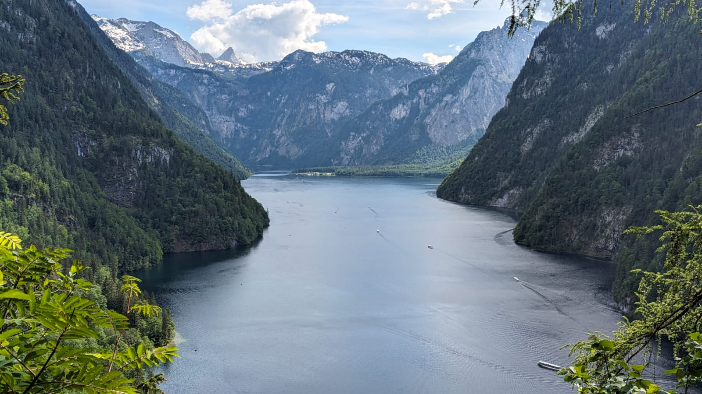
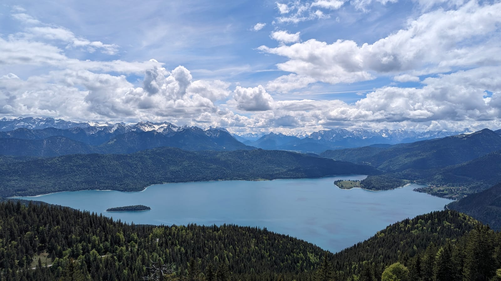
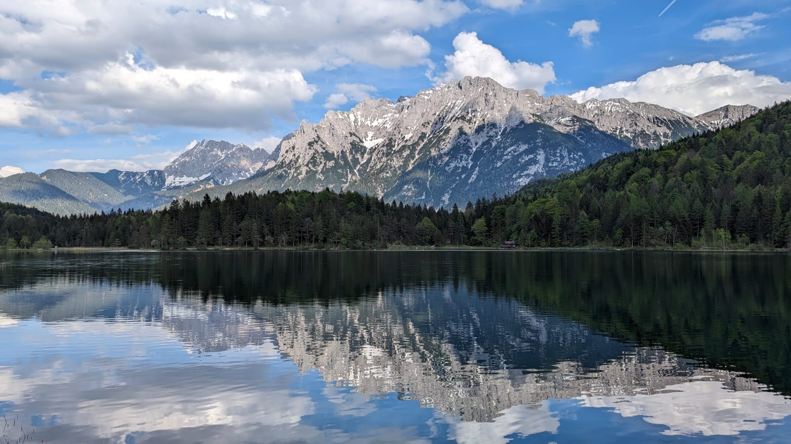
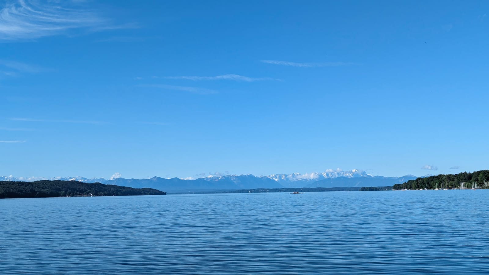
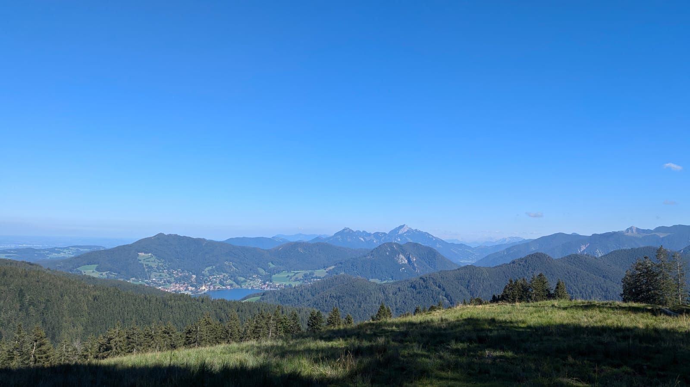
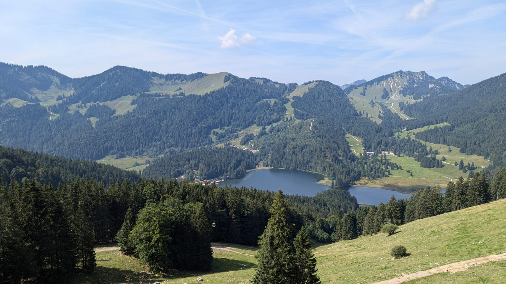
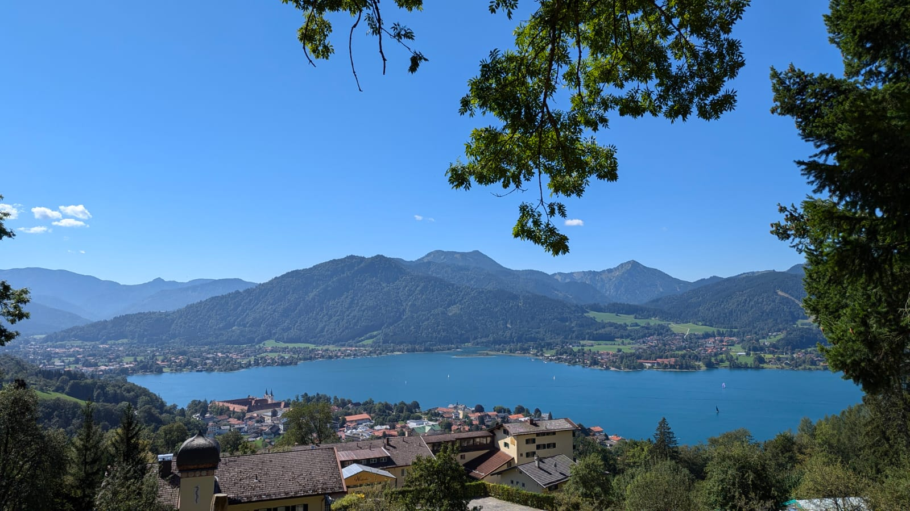
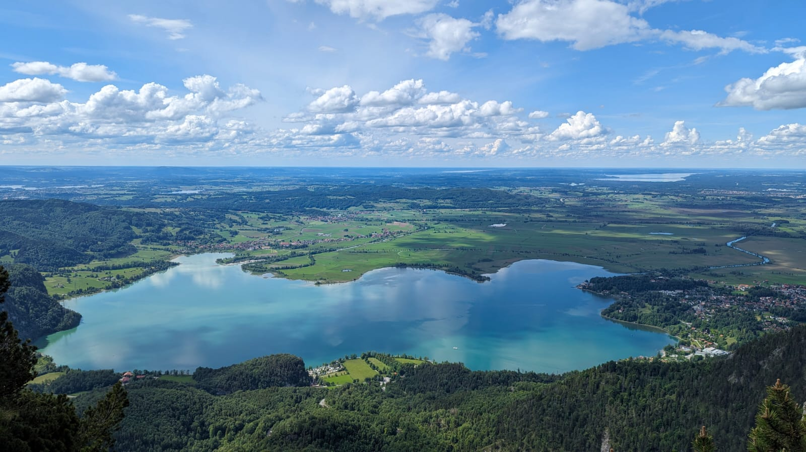

Welcome to my blog. I am a travel enthusiast and I love to explore new places. I have been to many places and I
would like to share my experiences with you. I hope you enjoy reading my blogs.
Beautiful Lakes of Bavaria

Konigssee

Walchensee

Lautersee

Starnbergersee

Schliersee

Spitzingsee

Tegernsee

Kochelsee
Thank you for visiting my travel blog! I hope my stories, photographs, and guides have inspired your next
adventure.
Feel free to follow me on social media for more updates, travel tips, and glimpses of my journeys around the
world.
Have any questions or collaboration ideas? I’d love to hear from you. Get in touch via email or through any of my
social media channels below!